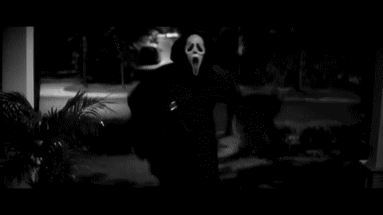

Ghostface, o personagem icônico da franquia "Pânico", é um assassino em série que se esconde sob uma máscara de fantasma e um manto preto. O personagem foi criado por Wes Craven e Kevin Williamson e se tornou uma parte essencial da cultura pop de terror. Ghostface é conhecido por seu modus operandi de ligar para suas vítimas e fazer perguntas sobre filmes de terror, antes de atacá-las. A máscara, inspirada na pintura "O Grito" de Edvard Munch, foi projetada por Brigitte Sleiertin e adotada por vários atores para representar Ghostface em diferentes filmes. A identidade do personagem é sempre mudada, permitindo que outros usem o disfarce, e Ghostface é um símbolo de vingança e busca de fama
 voltar